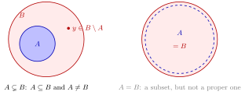

Proper Subset¶
Definition¶
Let and be sets. We say that is a proper subset of denoted unambiguously by if every element of is also an element of but some element of is not in Equivalently,
Interpretation¶
A proper subset captures strict inclusion between sets.
It distinguishes between equality and containment.

Key Results¶
- Every proper subset is a subset, but not conversely.
- Proper inclusion is transitive, i.e., and implies
Examples¶
- A set is never a proper subset of itself.
Prerequisites¶
Sources¶
- Math I: Calculus · Lecture 1
Symbols: element of, subset, there exists
Last updated: 4 October 2026 01:16
Proper SubsetSubset